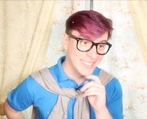

Patton

Patton Sanders (also known as Dad) is Thomas Sanders' third Side. He represents Thomas's sense of right and wrong and his desire to be more caring. He is also known as the heart for Thomas. His fellow Sides are Logan, Roman, and Virgil.
Patton represents Thomas's moral side. He is emotional and humorous, and sometimes the counterpart to Logan, such as in The MIND vs. The HEART!. Patton represents the father/parental figure in the group, the inner child and Thomas' love of dad jokes.
Patton's name comes from Aristotle's ingredients for persuasion (just like Logan's) and is based on Pathos, the appeal to emotions. It is similar to the root of the word 'paternal' and means 'when the warriors come', or, alternatively, 'from the city of warriors'. While Patton a part of Thomas and therefore is male, the name can be used for multiple genders.
Patton had brown hair and eyes like Thomas himself (as the standard demands). Donning thick black glasses, he wore a sky blue polo shirt with what looks like the Welsh dragon on it and a grey cardigan tied loosely around his shoulders.
Patton now wears a custom polo shirt with a heart wearing glasses (still remaining sky blue), and occasionally swaps out his grey cardigan with a cat onesie or hoodie. Ever since MOVING ON, Part 2/2: Dealing With a Breakup, Patton wears the cat hoodie that Logan gave him. His glasses stayed the same, and much like every other side, his hair was dyed purple when Thomas dyed his.
On occasion, Patton has worn various other outfits.
This grey cat onesie has made an appearance in The MIND vs. The HEART! and other videos. It was originally worn with the grey cardigan over it, then occasionally worn instead of the grey cardigan. The cat onesie inspired Logan to give Patton the cat hoodie that is part of his current outfit.
In Losing My Motivation, Patton wore his grey cardigan usually worn over the shoulders as a jacket over his blue t-shirt. He also wore and a black and grey checker scarf and a grey and white flat cap to play the part of Watson when Logan was playing Sherlock.

Patton wore a light blue sweater with cats and dogs on it in The Sanders Sides 12 DAYS OF CHRISTMAS!.
"Patton" (Janus in disguise) is chosen as the director in Can LYING Be Good??. He wears a grey long-sleeved shirt and a scarf, the same one he wore for his Watson outfit.

As a puppet, Patton was a paper bag. He wore a light-blue t-shirt, a grey cardigan over the shoulders, and glasses, similar to his regular form.
In EMBARRASSING PHASES: The Nightmare Instead of Christmas!, Logan and Roman remind Patton that he was supposed to dress up as the wolf-man. However, he is dressed as the woof-man, or a dog. He wears a brown t-shirt, brown cardigan over the shoulders, floppy dog ears, and a light blue collar. At the beginning of the video there is a Scooby Doo tag on the collar, but later on it becomes a metallic dog bone with "PAWTON" written on it. In addition to all this, Patton wears makeup on his nose and around his mouth to appear as a dog snout and his standard glasses.
As a lawyer in Selfishness v. Selflessness, Patton wears his classic blue polo shirt with a white tie. Over it, he wears a pale yellow vest and a grey blazer.
Patton is an emotional character, but unlike Roman, it can be said he's the embodiment of Thomas' niceness and courtesy. Patton acts much like the average 60's sitcom father, using words like nifty and calling Thomas and the other sides kiddos. Patton is a very childlike character, often referencing children's cartoons (i.e. Steven Universe, Winnie the Pooh, etc.) and even when visiting his room in the Moving On arc, we learn that he holds onto all of Thomas's childhood memories and objects. Though he is the emotional Side, Patton finds it hard to be open about his negative feelings saying [he's] just your happy pappy Patton.
He is very orderly and laid back, and has a fatherly attitude towards people and animals who need care. However, he is usually very ditzy and clumsy (or at least acts like that). He has a fear of spiders, calling them Creepy Crawly Death Dealers, although he can get scared of anything relatively easy. Sometimes he can be over the top with his jokes, intervening on every occasion that can make a pun of (such as when Virgil ducked out) (quack), but usually, he is polite and respects others.
However, because he is an impulsive Side representing under more feelings, he will usually do something if it suits him fancy, even if others may disagree. An example would be shutting Logan up during Putting Others First - Selfishness v. Selflessness Redux, while Roman and Thomas felt that was uncalled for (which he does not seem to acknowledge). Afterwards, he acted if everything was okay when Logan returned.
Patton's Room, which is visited in the Moving On arc, is described as "Nostalgia Nirvana", although it is implied that since Patton is at the core of a lot of Thomas' feelings, Patton's Room could vary. Patton's room is filled with mementoes from throughout Thomas' life. Similar to how Virgil's room causes heightened anxiety, the room also has an effect on Thomas and the Sides, causing them all to feel nostalgic at one point in the video. However, the room does have a negative effect on Virgil, causing him to feel more anxious than normal.
Patton seemingly views Roman a brotherly friend figure. He likes Roman and encourages his ideas, but will let him know when he is being over the top, though Roman almost never listens to him. Though Roman very obviously doesn't take him seriously, Patton cares a lot about Roman's passions, playing into his fantasies and participating in some of his ideas. Despite Roman's attitude towards Patton, he often laughs along with his jokes and attempts to explain things that go over his head.
Patton is the first side Virgil opens up to, calling him a funny guy and telling Roman to not be mean to him. Patton seems to regard his relationship with Virgil as a father and son relationship. His nicknames for Virgil allude to this, like my dark strange son, my poor lil’ anxious baby, son, and kiddo. Patton has always liked Virgil and has been the most open to his visits in the early episodes, even before the Accepting Anxiety arc when Virgil was officially accepted as a Side. However, it took Virgil a while to begin to get along with Patton, often ridiculing him and even making him feel bad in Alone on VALENTINE'S DAY! to the point where he says [he's] hopelessly crushed!, though that may not have been intentional. It is currently unknown how Virgil looks towards Patton, if these feelings are reciprocated, but it has been hinted that they aren't.
Logan and Patton are not exactly the epitome of friendship. Logan represents the 'Mind' and Patton represents the 'Heart' and, as shown in The MIND vs. The HEART!, these two concepts are often times at odds with one another. This idea is very much present in the Sanders Sides, and Joan has confirmed them to be direct counterparts in the Sanders Sides Q&A, where their elements are also given as earth and air, respectively.
Despite this, Patton and Logan have grown to get along fairly well and act more like roommates or like a parent and a teacher. They don't always see eye to eye with each other, but they are the most open to compromise with each other, evidenced in The MIND vs. The HEART and MOVING ON, Part 2/2: Dealing With a Breakup. Logan often insults Patton's intelligence and pokes fun at his interests, but over time, Patton and Logan have been able to come together and have a much more friendly relationship than they had in the beginning.
When Janus impersonated Patton in Can LYING Be Good??, Patton seemed to not know that Janus was there in place of him. Patton has a more in-depth knowledge of Janus, however, presumably from his knowing that Janus is an inner-coach.
When Remus appears in Dealing with INTRUSIVE THOUGHTS, Patton is royally unsettled by his claims to be Thomas' imagination. After attempting to force Remus out of Thomas' brain, Patton eventually gives Thomas his permission to have these weird thoughts, which helps them to minimize the effects of Remus being in Thomas' brain.